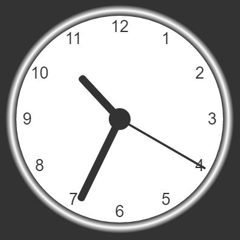

My bus tracker
A simple application which uses data apis and ajax to pull the predicted arrival of buses near lane.

The Airhorner
A button project intended to use a service worker, so it may operate as an application, even without an internet connection.

New York Times movie search
Uses an official api provided by the New York Times to search up reviews done by the New York Times about any movie that the NYT has ever reviewed

Canvas clock
A clock made using a canvas that tells the real time of day and moves with that time.

New York Times Article search
Another website that uses an official NYT api, but this one helps the user search for any article written by the NYT

Car finding app
Another app that uses an API this time pulling from the Chicago data portal to locate a car by the license plate, in the event that it was towed, and how to find it.

Bus tracker v2
The second edition of the previous bus tracker. In theory it's supposed to have more options and user interaction.